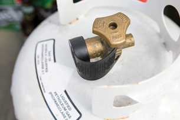

Module 3—Behaviour of Gases
 Reflect and Connect
Reflect and Connect
Compressed Carbon Dioxide Cartridges

Throughout this module you are asked to consider technologies that apply the use of one or more of the gas laws. For your combined unit and module assessment, you will prepare a response on a technology that applies gas laws. To prepare your response, consider the following information on compressed carbon dioxide cartridges. Refer to the Unit Assessment section for more information.
Compressed carbon dioxide cartridges are a popular alternative to a hand pump for many cyclists. Since the size of the tires and the suggested optimal inflation pressure varies between mountain bikes and road bikes, different sizes of cartridges are available. Each size of cartridge has a different mass of carbon dioxide inside.
Describe advantages and disadvantages of the use of compressed carbon dioxide gas cartridges in place of a hand pump to inflate bicycle tires. Make sure your list addresses at least three different perspectives.
Save a copy of your list in your course folder. You may wish to use this explanation when completing the unit assessment.
Reflect on the Big Picture
Propane Cylinders

© 2008 Jupiterimages Corporation
Throughout this unit you have been asked to consider technologies that apply the use of one or more of the gas laws. Consider the use of propane cylinders.
How does a technician at a filling station know when a propane cylinder is full? Can you think of how the ideal gas law applies to the filling of propane cylinders, like the cylinders used with many gas barbeques? How is the safety of gas cylinders determined at a filling station? Does this system have merit?
 Module 3: Lesson 4 Assignment
Module 3: Lesson 4 Assignment
Complete the remaining questions in Module 3 Assignment 4.